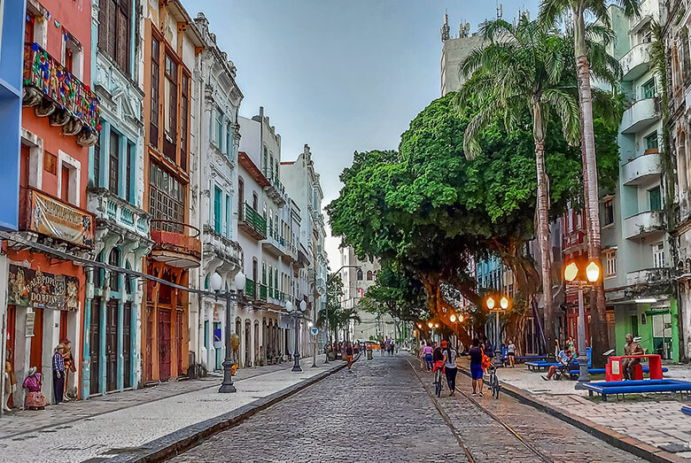

Recife é uma cidade rica em atrações turísticas que prometem encantar os visitantes. Entre os destaques, você não pode deixar de conhecer:
1. Marco Zero
Uma praça histórica que marca o início da cidade, é um local pitoresco à beira do rio que oferece uma vista deslumbrante.

2. Rua do Bom Jesus
Conhecida por sua arquitetura colonial e sinagogas antigas, esta rua é repleta de história e charme.

3. Capela Dourada
Uma igreja barroca que abriga verdadeiras obras de arte, sendo um local de grande valor cultural e religioso.
4. Casa da Cultura
Um antigo presídio transformado em um vibrante centro cultural. Aqui você encontrará diversas lojas de artesanato local e poderá degustar a gastronomia típica da região.
5. Recife Antigo
O bairro histórico de Recife é repleto de construções coloniais, museus e espaços culturais.
